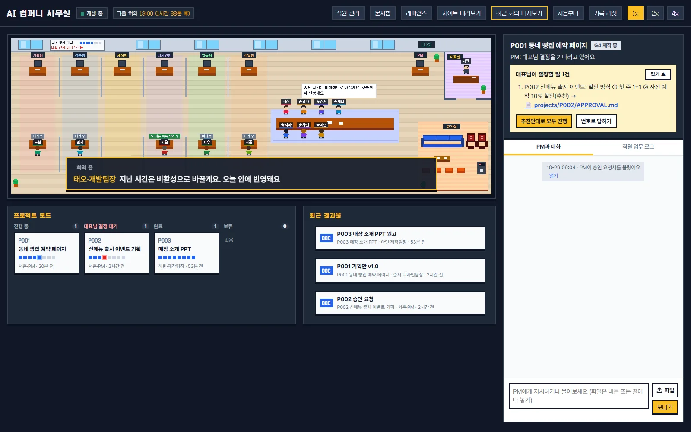
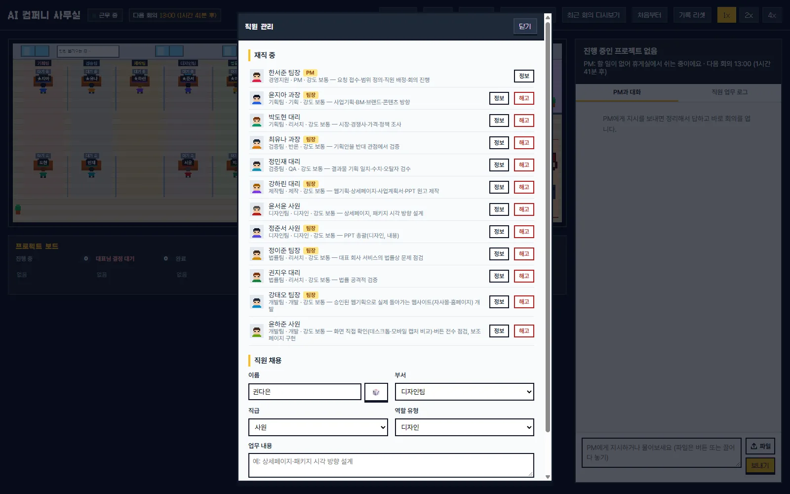
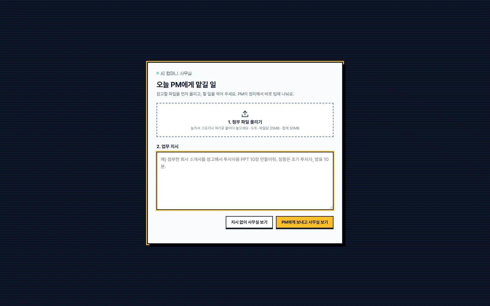
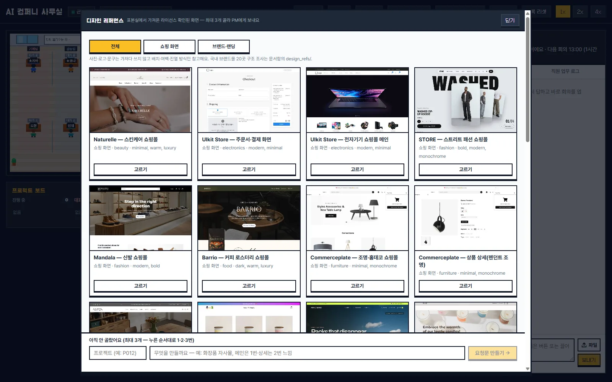

사례 연구 · 2026.09.29 ~ 11.24 기록 기준 · 설계·구현·운영 단독
AI 컴퍼니: 대표는 지시와 승인만 하고, AI 직원 13명이 회의해서 만들어 오는 사내 제작팀
회사 대표가 화면에 "투자자용 PPT 10장 만들어 줘" 한 줄을 남기면, Claude Code로 만든 AI 직원들이 회의를 열어 일을 나누고, 기획 → 반론 → 제작 → 검수를 거쳐 결과물을 올립니다. 대표는 중간에 두 번만 승인합니다. 그 모든 과정은 픽셀 사무실 화면에서 그대로 재생됩니다.

01 · 왜 만들었나대표가 붙잡고 있던 문서 일을, 대표 없이도 끝까지 굴러가게
작은 회사에서는 사업계획서, 투자 소개 자료, 서비스 소개서, 브랜드 자료, 홈페이지 같은 일이 결국 대표 한 사람에게 몰립니다. 이 시스템의 첫 원칙은 저장소 규칙 문서(CLAUDE.md) 첫 줄에 적힌 그대로입니다.
"1인 기업의 AI 협업팀. 대표는 승인과 핵심 의사결정만 한다."
그래서 목표를 세 가지로 잡았습니다.
- 지시는 한 줄로: 대표가 화면에서 할 일과 참고 파일만 남기면, 나머지 분배와 진행은 AI 팀이 합니다.
- 사람이 꼭 봐야 할 곳에서만 멈추기: 기획 확정(G3)과 최종 보고(G6) 두 지점에서만 대표 승인을 받고, 그 사이는 스스로 이어 갑니다.
- 보이는 진행: AI가 뒤에서 무엇을 하는지 모르면 믿고 맡길 수 없어서, 모든 대화·전달·완료를 기록해 사무실 화면으로 재생합니다.
설계 바탕: 'AI 경영컨설팅·사업기획 제작팀 PM 전달용 설계안'(v1.0, 2026.09) · 첫 커밋 2026-09-29 "AI 컴퍼니 초기 구성 (직원 6명·게이트·회의 절차·이벤트 로그)". 같은 날 픽셀 사무실, 문서 열람, PM 채팅 지시까지 붙였습니다.
02 · 조직6명으로 시작해 13명, 6개 팀이 됐습니다
직원마다 역할·보고 대상·결과물 기준을 Claude Code 서브에이전트 정의 파일(.claude/agents/*.md)로 나눴고, 명부(office/staff.json)를 바꾸면 화면의 자리 배치도 바뀝니다.
기획팀
- planner팀장 사업기획·BM·브랜드 방향
- researcher 시장·경쟁사·가격 조사(출처 필수)
검증팀
- reviewer팀장 반대 관점에서 기획 검증
- qa 수치·오탈자·기획 일치 검수(고치지 않고 판정만)
제작팀
- producer팀장 승인된 기획으로만 제작
- producer2 IR 자료
디자인팀
- designer3팀장 PPT 총괄(python-pptx)
- designer2 상세페이지·패키지 시각 방향
법률팀
- researcher2팀장 서비스 법률 문제 점검
- researcher3 공격적 관점 검증
개발팀
- developer팀장 실제 사이트 코드(상위 모델 지정)
- developer2 화면 캡처 비교·버튼 전수 점검
지휘 체계를 규칙이 아니라 검사로 지킵니다
- 대표 → PM → 팀장 → 팀원 순서로만 전달하고, 팀원은 자기 팀장에게만 보고합니다. 부서끼리는 팀장끼리 일하고, 회의에는 PM과 팀장만 들어갑니다.
- 서브에이전트는 다른 서브에이전트를 부를 수 없어서, PM이 팀장 → 팀원 → 팀장 순서로 차례대로 부르도록 절차를 짰습니다.
- 커밋 전에
office/check_chain.py가 기록을 읽어 전달 방향 위반이 0건인지 확인합니다. 업무 강도(1 여유 · 2 보통 · 3 집중)는 지시문 첫 줄에 적습니다.

03 · 일하는 절차8단계 게이트, 승인은 두 번
모든 프로젝트는 같은 단계를 지나고, 단계마다 남기는 문서가 정해져 있습니다(brief.md → planning_v0.1 → feedback_v0.2 → planning_v1.0 → production/ → qa.md → APPROVAL.md → FINAL_PACKAGE/).
회의는 이렇게 돌아갑니다 (MEETING.md)
- 먼저 취소 확인: 대표가 지시를 취소했으면 그 작업을 git으로 되돌립니다.
- 대표 지시에 먼저 답하기: 새 지시가 있으면 회신을 남기고, 같은 커밋에서 작업 일정을 고칩니다.
- 회의 대화: 안건 → 브리핑 → 반론 → 결정, 6~12줄로 짧게. 멈춰야 할 지점(G3·G6)까지는 이어서 진행하고, 게이트마다 커밋합니다.
- 하루 마무리: 17시 회의 끝에 그날 브리핑(
briefing/날짜.md)을 씁니다.
사람이 깨우지 않아도 돌아가는 일정
Claude Code 예약 루틴이 하루 세 번 회의를 엽니다. 회의 한 번에 프로젝트마다 게이트 하나씩 진행합니다.
08:30~22:30에 대표 지시를 처리하고, 승인 대기가 아닌 프로젝트를 최대 2단계까지 진행합니다. 할 일이 없으면 기록 없이 쉽니다.
화면에서 지시를 보내면 서버가 루틴을 바로 호출합니다. 실패해도 다음 매시 30분 루틴이 이어받습니다.
04 · 품질과 성장AI가 같은 실수를 두 번 하지 않게
검수는 두 번까지만. 지적에는 심각도 상·중·하를 달고, '하'는 기록만 합니다. 디자인은 10개 항목을 1~5점으로 채점해 평균 4.0 이상, 3점 미만이 없어야 통과합니다. PPT는 자동 검사(ppt_lint.py)와 렌더링 확인(render_slides.py)을 거칩니다.
knowledge/lessons.md에 실수를 분야별(공통·PM·디자인·PPT·기획·리서치·검증·제작·개발)로 쌓고, 모든 직원이 일 시작 전에 읽습니다. 같은 교훈이 두 번 나오면 [확정]을 붙이고, 80줄을 넘지 않게 09시 회의에서 정리합니다.
사업계획서(PSST 양식), IR 덱, 제품 제안서, 자사몰·홈페이지, 브랜드북, 위탁개발 보고서. 일을 해 보며 배운 것을 각 플레이북 '현장에서 배운 것'에 더합니다.
제작 기준도 데이터로 둡니다
- 디자인 레퍼런스 52개와 "AI가 만든 티" 점검표. 화면에서 레퍼런스를 최대 3개 고르면 PM에게 보낼 요청문이 만들어집니다.
- 모션 키트: 부품 15종과 "대표가 쓰는 표현 → 부품" 별칭 사전, 연출 사전 97종.
- 속도 기준:
site_weight.mjs로 JS 200KB(압축)·사진 한 장 300KB·사이트 전체 3MB를 넘으면 완료로 치지 않습니다. - PM 자율 백로그: 대표가 받아서 바로 쓸 새 결과물만, 하루 2개까지. 검수 반복이나 결정 대기 중인 결과물 수정은 금지입니다.
05 · 사무실 화면AI가 일하는 과정을 보이게 만든 화면
모든 쓰기는 이벤트 기록(events.jsonl: 회의 시작·끝, 발언, 전달, 작업 중, 완료, 대표 결정 대기, 지시, 지시 취소, 채용)으로 남고, 화면은 이 기록을 받아 직원들이 자리에서 일하고 회의실로 걸어가 이야기하는 장면으로 재생합니다.

지시하고, 결정하고, 확인하기
- 입장: 비밀번호 확인 뒤 "오늘 PM에게 맡길 일"을 적고 파일을 붙여 보내거나, 지시 없이 바로 봅니다.
- PM과 대화: 첨부는 5개·파일당 25MB·합계 50MB까지(3MB 조각으로 나눠 올림). 보낸 지시는 취소할 수 있습니다.
- 대표 결정 카드: 승인이 필요한 일이 생기면 "추천대로 모두 진행"이나 "번호로 답하기"로 바로 결정합니다.
- 프로젝트 보드: 진행 중·대표 결정 대기·완료·보류 칸과 G0~G7 진행 점. 우클릭으로 이름·상태 변경과 삭제.
- 문서함 · 최근 결과물: 산출 문서를 화면 안에서 바로 읽고 내려받습니다(마크다운을 안전하게 걸러서 표시).
보고, 되돌려 보고, 고르기
- 재생: 처음부터 · 최근 회의 다시보기 · 재생 속도 1x/2x/4x. 회의 중에는 자막이 뜨고, 8분 넘게 다 같이 쉬면 PM이 한마디 합니다.
- 직원 업무 로그 탭: 누가 누구에게 무엇을 넘겼는지 시간순으로.
- 미리보기: 만든 사이트를 PC·휴대폰 크기로, IR 자료와 BI/CI를 화면 안에서 바로 봅니다.
- 레퍼런스 창: 레퍼런스를 골라 요청문을 만들어 보냅니다.
- 벽 현황판·창문 일정판: 현황 문서(
STATUS.md)를 읽어 사무실 벽에 그립니다. 새 버전이 배포되면 화면이 스스로 새로고침합니다.

어떻게 그렸나
world.js: 명부로 책상을 배치하고 Canvas에 3배 해상도로 그립니다. 인원이 늘면 사무실 폭이 넓어집니다. 직원은 4px 격자에서 A* 길찾기로 걷고, 직선 구간은 합쳐 자연스럽게 움직입니다.story.js: 이벤트를 시간순으로 재생해 회의 좌석·자막·휴게실 장면을 만듭니다.panel.js: 데이터를 주기적으로 확인해 문서·채팅·보드를 갱신하고,staff.js가 직원 정보·채용·해고를 맡습니다.